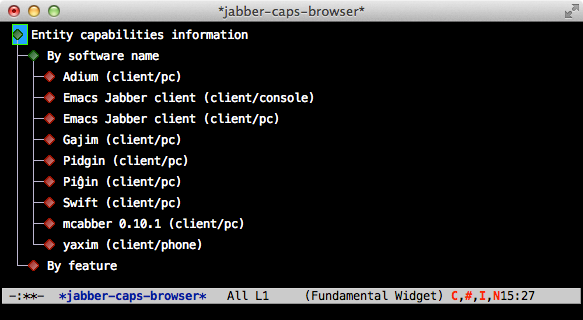
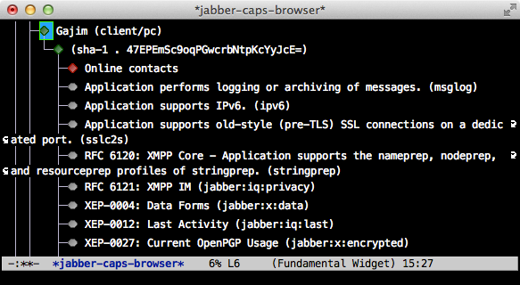
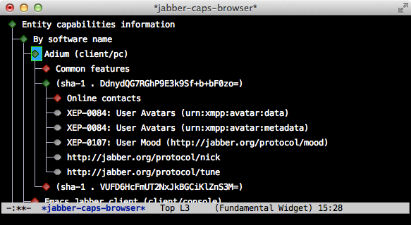
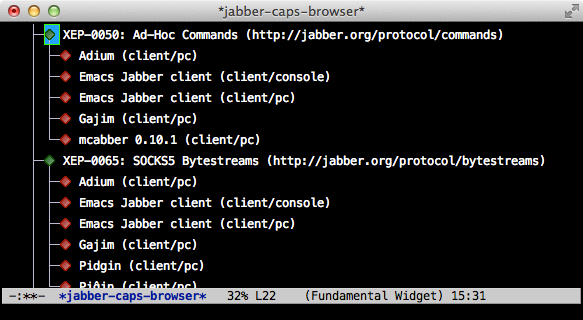

jabber-caps-browser is an addon to jabber.el, the Emacs Jabber client. It offers a visual presentation of the features supported by the Jabber clients that your contacts use.
Screenshots
My client currently knows about a few different pieces of software:

It knows about one version of Gajim, and can list its features:

It knows about two versions of Adium. There is a list of features common to all of them, and a list of unique features:

It can also list all the software versions that support a particular feature:
